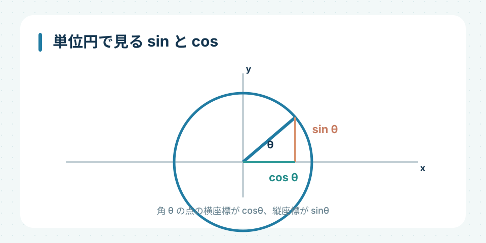

三角関数の加法定理を図解｜公式と例題
三角関数の加法定理は共通テストから大学個別試験まで幅広く使います。符号の違いを整理し、75°の値や2倍角の公式を自分で導けるようにしましょう。
このページで学べること
sin(A+B)・cos(A+B)の使い分け。要点を読んだら、最後の確認問題で理解度をチェックしましょう。
加法定理の4つの基本形

sin は真ん中が「交差する積」、cos は「同じ関数の積」です。cos の符号は括弧内と反対になるのがポイントです。
sin(45°+30°) = (√2/2)(√3/2) + (√2/2)(1/2) = (√6+√2)/4
30°、45°などの既知角の和に分けて計算します。2倍角は加法定理から導く
加法定理で A=B=θ とすると、sin2θ = 2sinθcosθ、cos2θ = cos²θ−sin²θ が得られます。さらに sin²θ+cos²θ=1 から、cos2θ = 1−2sin²θ = 2cos²θ−1 も導けます。
よくある間違いと確認手順
- sinの展開とcosの展開を混同しない。
- cos(A−B) の積の間はプラス。
- 角度が度数法か弧度法かを確認する。
たとえば cos15°=cos(45°−30°)= (√6+√2)/4 です。sin75°と同じ値になるのは余角の関係からも確認できます。
確認問題に挑戦！
全3問。答えを考えてから「解答と解説を見る」を押してね。
sin(60°−30°) の値は？
解答と解説を見る ＋
1/2
sin60°cos30°−cos60°sin30°=3/4−1/4。
cos(60°+30°) の値は？
解答と解説を見る ＋
0
cos90°=0。加法定理でも1/4−3/4ではなく、cos60cos30=√3/4、sin60sin30=√3/4で相殺します。
sin2θ を sinθ, cosθ で表すと？
解答と解説を見る ＋
2sinθcosθ
sin(θ+θ)を展開します。
加法定理は sin は同符号、cos は逆符号。2倍角は A=B で導ける。
ここまで読めたら、ひと区切り。
理解できたら学習済みにチェックして、次の記事へ。
StudyMasterの無料学習コンテンツです。AIを補助的に用いて作成しています。例題・解答は公開前にご自身でも確認してください。内容に誤りがある場合は、学校の教科書などと照合してください。
公開・更新：2026年11月12日